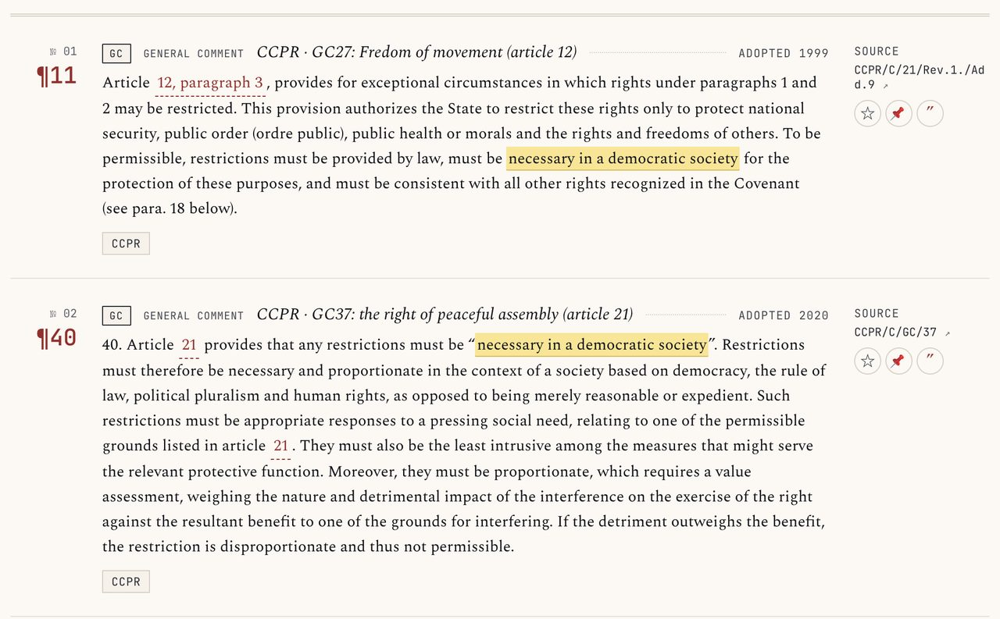
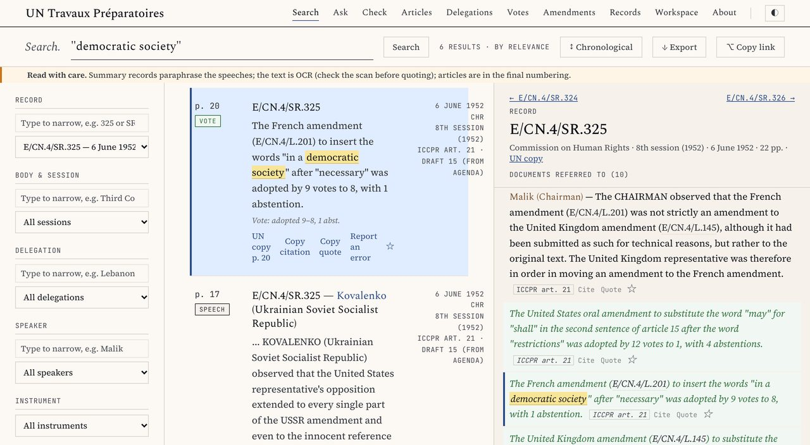
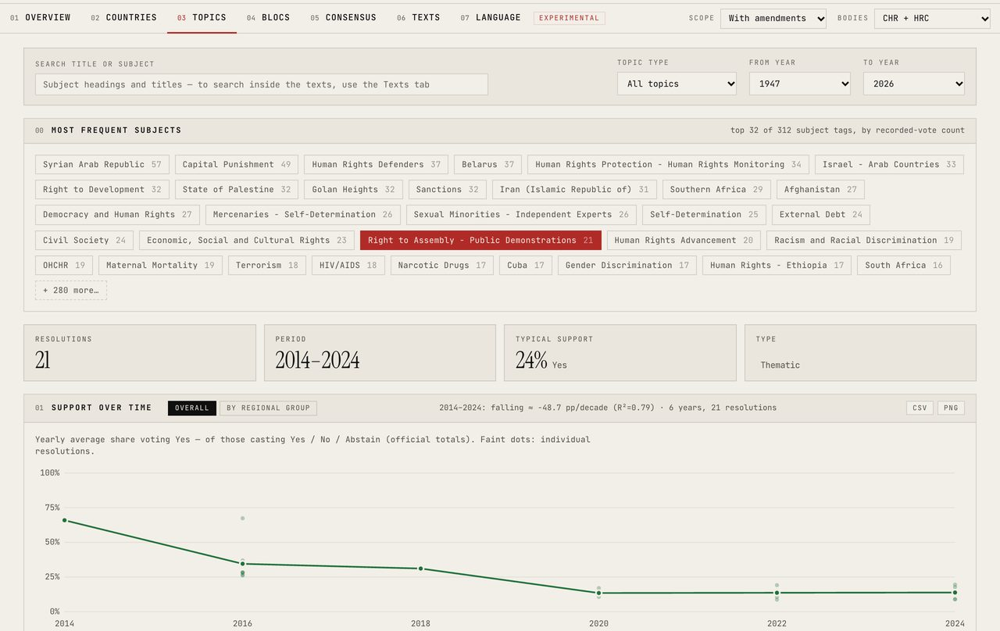
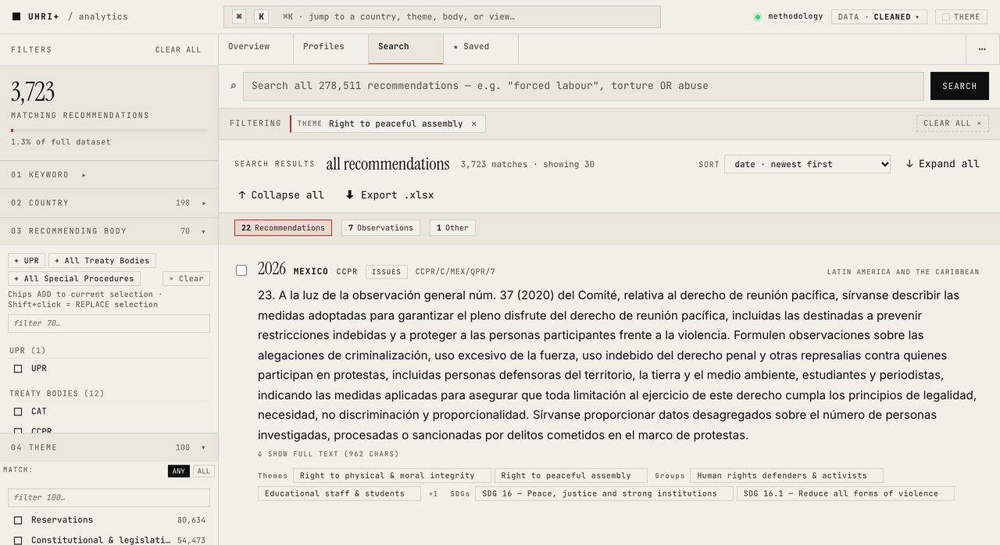

Find It. Cite It.
Check It
From Paragraphs to Votes
Hands-on searching of UN human rights sources
Łukasz Szoszkiewicz
CyberLaw Lab, Faculty of Law and Administration,
Adam Mickiewicz University in Poznań (Poland)
40. Article 21 provides that any restrictions must be “necessary in a democratic society”. Restrictions must therefore be necessary and proportionate in the context of a society based on democracy, the rule of law, political pluralism and human rights, as opposed to being merely reasonable or expedient.
From Ctrl+F to open tools
Ten years of research on UN human rights documents: the treaty bodies, the Universal Periodic Review, the Special Procedures and the travaux préparatoires.
Generative AI helps me build the tools. It does not answer your questions: every result is the text of a UN document.
Three principles behind all four tools
No answer is generated
AI helped me write the software and prepare the data. Every result is verbatim text from the document, with its UN symbol and paragraph number.
The paragraph is the unit
The smallest citable unit: a paragraph, a speech, a vote, a recommendation. One click copies it with its full citation.
One click from the source
Each result links to the authoritative record: OHCHR, the Official Document System, the UN Digital Library.
Each one ends where an official record begins
| Tool | What it holds | Links to |
|---|---|---|
| UN Human Rights Database | 323,000+ paragraphs: General Comments, jurisprudence of the treaty bodies, reports of the Special Procedures | docs.un.org |
| UN Travaux Préparatoires | 29,694 speeches from the drafting of the UDHR, the ICCPR and the ICESCR (1946–1966), with votes and amendments | UN scans (undocs.org, UN Digital Library) |
| HRC Voting | 7,420 records of the Commission on Human Rights, the Human Rights Council and the Third Committee of the General Assembly; 2,736 of them decided by a recorded vote | searchlibrary.ohchr.org |
| UHRI+ | 278,000+ recommendations and observations addressed to States by the UPR, the treaty bodies and the Special Procedures | uhri.ohchr.org |
“Necessary in a democratic society”
Article 21 ICCPR allows restrictions on peaceful assembly only if they are necessary in a democratic society. What does that mean, where do these words come from, and what do States do with them today?
UN Human Rights Database
Travaux Préparatoires
HRC Voting
UHRI+
UN Human Rights Database
What does “necessary in a democratic society” mean?
The paragraph, with its citation
Article 21 provides that any restrictions must be “necessary in a democratic society”. Restrictions must therefore be necessary and proportionate in the context of a society based on democracy, the rule of law, political pluralism and human rights, as opposed to being merely reasonable or expedient.CCPR/C/GC/37, para. 40

"necessary in a democratic society"Spot the two errors
The Human Rights Committee requires restrictions to be “necessary and proportionate in the context of a society based on democracy and the rule of law” (CCPR/C/GC/37, para. 41).
- Write in the chat what is wrong
- Paste the sentence into Check: the symbol is resolved, the paragraph number checked, the quotation compared with the source
- Try it on a paragraph from your own draft
A question in your own words
Do organizers have to ask the police for permission before holding a protest?
- Search (every word must appear): 0 paragraphs
- Ask, first result:
Having to apply for permission from the authorities undercuts the idea that peaceful assembly is a basic right.CCPR/C/GC/37, para. 70

A model only finds and orders the paragraphs, and every word on the screen is the Committee's.
Does search by meaning find the right source?
state burden justify assembly restrictionsnecessary in a democratic societyLower bounds: the answer keys are frozen in time, and a newer document that answers better counts as a miss. A question in your own words: use Ask. A few words: use Search.
UN Travaux Préparatoires
Where do these words come from?
6 June 1952: nine votes to eight
The French amendment (E/CN.4/L.201) to insert the words “in a democratic society” after “necessary” was adopted by 9 votes to 8, with 1 abstention.E/CN.4/SR.325, p. 20
- Roosevelt (United States of America) opposed the words because of their ambiguity (p. 15)
- Cassin (France): a reference to public order and to democratic society was essential to safeguard the freedoms of assembly and association (pp. 11–12)

"democratic society"Record E/CN.4/SR.325Summary records paraphrase in the third person: check the scan before you quote.
HRC Voting
How do States vote on peaceful protests?
Peaceful protests at the Human Rights Council
| Year | Resolution | Yes – no – abstain |
|---|---|---|
| 2014 | A/HRC/RES/25/38 | 31 – 9 – 7 |
| 2016 | A/HRC/RES/31/37 | 31 – 5 – 10 |
| 2018–2024 | four resolutions | without a vote |
Between 2016 and 2024, 19 amendments to these resolutions were put to a vote. All were rejected.

Right to Assembly - Public DemonstrationsScope: With amendmentsUHRI+
What are States told to do?
What States are told about peaceful assembly
3,700+ recommendations and observations carry the theme “right to peaceful assembly” in UHRI+.
UHRI+ is the same data, cleaned, with visualizations and a statistics overlay. Every record opens in UHRI.

Right to peaceful assemblyFrom paragraph to vote, each step one click from the record
- FindUN Human Rights DatabaseCCPR/C/GC/37, para. 40
Necessary and proportionate, not merely reasonable or expedient (2020)
docs.un.org ↗ - OriginTravaux PréparatoiresE/CN.4/SR.325, p. 20
The French amendment adopted 9 – 8 – 1 on 6 June 1952
UN scan ↗ - PoliticsHRC VotingA/HRC/RES/25/38
Adopted 31 – 9 – 7 in 2014. Later, 19 amendments rejected
searchlibrary.ohchr.org ↗ - PracticeUHRI+3,700+ recommendations
What States are told about peaceful assembly, until today
uhri.ohchr.org ↗
Your AI assistant, connected to the same data
The Model Context Protocol (MCP) is an open standard that lets an AI assistant (Claude, ChatGPT and others) query a database while it answers. The tool returns the verbatim paragraph with its UN symbol, and the assistant writes around it.
| Connector | Address |
|---|---|
| UN-HRDBwith the UHRI recommendations | https://150.254.115.204/unhrdb-mcp-rpc/mcp |
| Travaux | https://150.254.115.204/travaux-api/mcp |
| HRC Voting | on your own computer: github.com/lszoszk/mcp-hrc-voting |
The conversation goes to the company that runs the assistant: no confidential text there. The tools themselves only see the search terms the assistant sends.
- Customize → Connectors → Add custom connector, paste the address
- Ask: “What does the Human Rights Committee say about notifying the authorities before a peaceful assembly? Quote the paragraphs with their symbols.”
- Watch the tool calls: what the assistant searched for
- Open a cited paragraph ↗: one click from the source
- Paste the answer into Check: every quotation compared with the text
How current the data are, and what to keep in mind
| Tool | Newest | Updated | Your search runs |
|---|---|---|---|
| UN Human Rights Database | 5 Nov 2026jurisprudence: 13 May 2026 | daily | browser · server |
| UN Travaux Préparatoires | closed, 1946–1966 | corrections only | server |
| HRC Voting | vote of 24 Sep 2026 | after each session | browser |
| UHRI+ | 9 Jul 2026 · 278,511 records | daily | server |
- The tools are unofficial and OHCHR has not endorsed them. In case of doubt, the official record prevails.
- Travaux: the text is OCR (about 0.5% of characters wrong). Ten documents are machine translations from French, marked as such.
- Server: a virtual machine of Adam Mickiewicz University in Poznań, web log kept 14 days. Ask (General Comments only in UN-HRDB) also sends the question to Voyage AI (owned by MongoDB).
- If you spot an error, tell me. Errors I find in the sources, I report back.
Questions
- UN Human Rights Database lszoszk.github.io/generalcomments
- UN Travaux Préparatoires lszoszk.github.io/travaux-preparatoires
- HRC Voting lszoszk.github.io/hrc-voting
- UHRI+ lszoszk.github.io/UnitedNations_recommendations
The data are open on Hugging Face and Zenodo, and each tool can be connected to an AI assistant (MCP).
Łukasz Szoszkiewicz · l.szoszkiewicz@amu.edu.pl